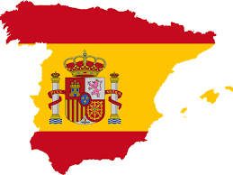
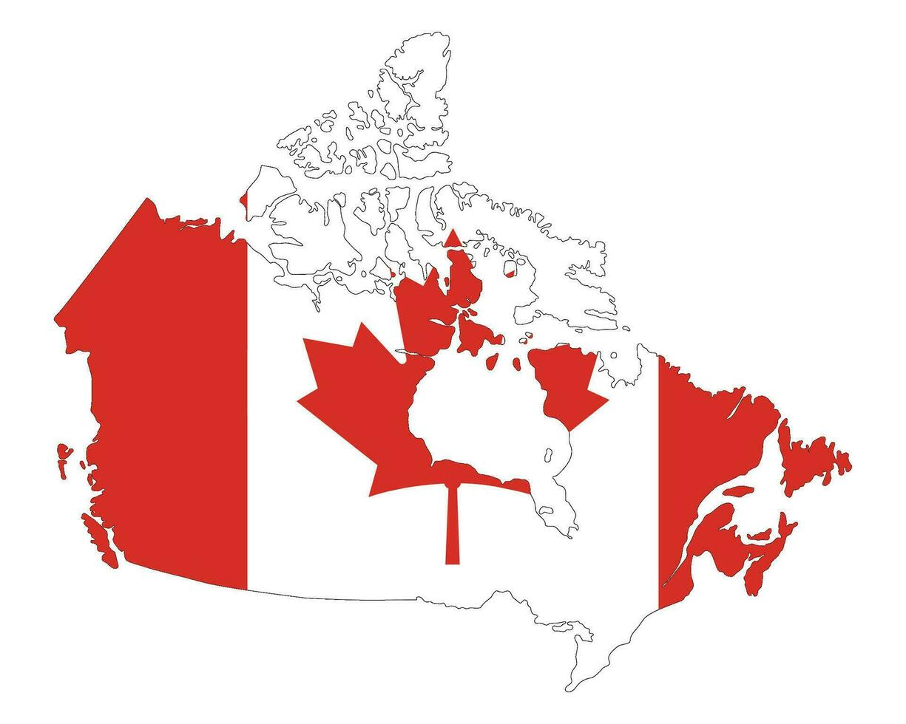
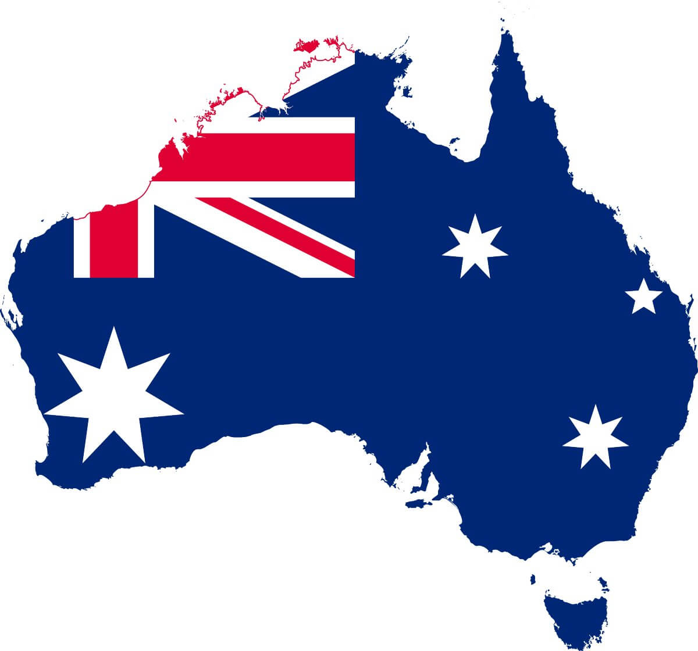
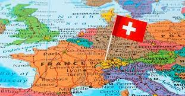

En esta pagina te damos 5 opciones de paises a los que podrias irte a vivir por si quieres escapar de Latinoamerica junto a una descripsion y un video de como es vivir en cada pais
1-España

España es líder en opciones de ocio y cultura. El 88% de los encuestados (casi 9 de cada 10 personas extranjeras residentes en España) está encantado con la variedad culinaria que se puede encontrar en nuestro país, el ambiente y la vida nocturna local y la cultura
2-Canada

El país es muy inclusivo, por lo que tiene una enorme diversidad cultural y no tendrás el riesgo de sufrir intolerancia y discriminación. Realmente te sentirás como en casa con los canadienses. Además, encontrarás una gran comunidad latinoamericana en el país, con la que podrás compartir experiencias y hablar español
3-Nueva Zelanada
Es un país liberal en todo el sentido de la palabra, desde lo social, cultural hasta la economía y los derechos humanos. Por esto resulta siendo uno de los mejores países del mundo para vivir.
4-Australia

Australia es uno de los mejores países para vivir, trabajar y hasta para criar una familia. En este país la calidad de vida es de las más altas del mundo, con una seguridad envidiable y un ambiente amigable. Además cuenta con un clima agradable con paisajes increíbles y con una tasa de desempleo cada vez menor
5-Suiza

Las ventajas de la vida en Suiza son evidentes: altos salarios, una economía y situación política estable, seguridad garantizada, y una excelente calidad de vida. La educación es de primer nivel, con universidades reconocidas a nivel mundial y un enfoque en la innovación y la investigación